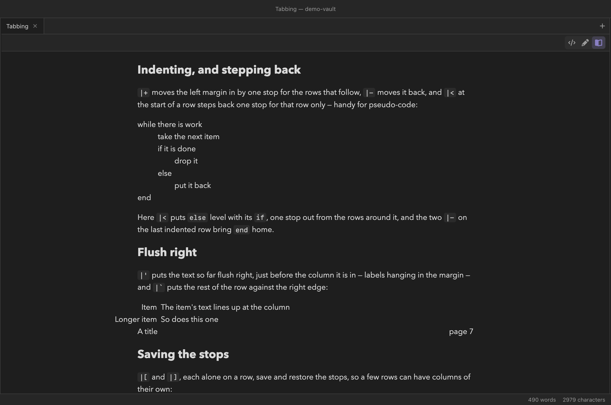

Writing
Tabbing
Tabbing lines text up at stops you set as you go, the
way a typewriter's tab stops work: LaTeX's tabbing
environment, in a notation that stays readable as plain text. Write a
```tabbing fence; every line is a row, and a bar followed by
one character is a tab command. (Tabbing arrives after 0.11.1; there, the
fence shows as a code block.)
You write
```tabbing
Alice Smith |= 12 Oak Street |= 555 1234
Bob |> 7 Elm Road |> 555 9876
```
|= sets a stop where it stands, just after the text before
it — measured as it is drawn, so the columns line up however wide the
letters are — and |> moves on to the next stop. The
spaces in the source are only there to keep it readable: a run of them
counts as one space, and the one before a |= belongs to the
text, so a stop falls a space after the text that set it.

|+ and |-, an else
stepped back with |<, labels set flush right before
their column with |', and a page number sent to the right
edge with |`.Stops are set by the text
A stop sits where the text before its |= ended, so the row
that sets it decides where it is. A later cell wider than its column is
not pushed along: the next piece still starts at its stop, and the two
print over each other — exactly as they would in LaTeX, where tabbing is
for text you know will fit. Put the widest entries in the row that sets
the stops, or set them with a ruler.
A ruler row
A row that ends in |kill sets its stops and is not shown —
a ruler, so the columns can be wider than anything in the first row you
see, a header for instance:
You write
```tabbing
Alice Smith  |= 12 Oak Street  |= Phone |kill
Name |> Street |> Phone
Alice Smith |> 12 Oak Street |> 555 1234
Bob |> 7 Elm Road |> 555 9876
```
|kill must end its line. The   in the
ruler is an em space: since a run of ordinary spaces counts as one, an
entity like it is the way to put a wider gap between columns, and the
layout measures it like any other text.
Indenting, and stepping back
|+ moves the left margin in by one stop for the rows that
follow, and |- moves it back out; several can sit together.
|< at the very start of a row steps that row alone back
one stop, when the margin has been moved in. Together they make
pseudo-code:
You write
```tabbing
while |= xxxx |= |kill
while there is work |+
take the next item
if it is done |+
drop it
|< else
put it back |-|-
end
```
The ruler sets two stops a word apart. while there is work |+
starts the rows after it at the first; if it is done |+
starts the next at the second; |< puts else
back level with its if; and the two |- on
put it back bring end home. The margin never
moves in past the last stop that has been set, nor out past the left
edge.
Flush right
|' takes the text so far in the current column and sets it
flush right, ending half an em short of the column's stop, so the text
after it starts at the stop — labels hanging to the left of a column.
|` sends the rest of the row flush against the right edge of
the text:
You write
```tabbing
Label: |= The text starts here |kill
|> Item |' The item's text lines up at the column
|> Longer item |' So does this one
A title |` page 7
```A label is free to hang past the left edge of the text into the margin, as Longer item does in the picture above; one that would hang past the visible edge of the pane moves the whole block in to make room.
Saving the stops
|[ saves the stops set so far and |] brings
them back — each clearest on a row of its own — so a few rows between
them can set columns of their own:
You write
```tabbing
Left |= Middle |= Right
|[
A much longer first column |= x |kill
|> in the temporary column
|]
|> back in the middle
```LaTeX's own commands
LaTeX's commands work alongside the bars — \=,
\>, \<, \+, \-,
\', \`, \\ to end a row,
\kill, \pushtabs and \poptabs —
inside the fence or in a @begin(tabbing) environment, so
tabbing pasted from a .tex file needs no rewriting. Since
\=, \' and \` are taken, the
accents they write elsewhere in LaTeX are \a=,
\a' and \a` here, as they are in LaTeX's own
tabbing.
You write
@begin(tabbing)
*Symbol* \= $x^2 + y^2$ \= /the circle/ \\
*Name* \> $r$ \> radius \\
Caf\a'e \> $\bar{x}$ \> the m\a=ean
@end(tabbing)
Cells take any inline formatting — emphasis, links, code — and
maths. The tab commands are not read
inside $…$ or an inline code span, so a formula or a span of
code may hold a bar freely; anywhere else, \| is a literal
bar.
```tabbing fence as an
ordinary code block, where the rows and their bars stay readable.
Where tabbing shows
- Reading mode measures each piece of text and places it as LaTeX would, then does it again when the fonts load, the pane is resized, or maths in a cell finishes typesetting — the alignment is real, not a grid.
- Live edit shows the laid-out block in place of its source while the cursor is elsewhere; click the strip above it to edit the source (see Live edit).
- The source is highlighted so the tab commands stand out from the text.
- A website export lays tabbing out the same way (see Publishing).
```tabbing fence exports as a code block — one that
currently stops a PDF-via-LaTeX compile (see
Troubleshooting) — and a
@begin(tabbing) environment loses its commands. Tabbing is
written to move into the jmarkdown engine itself; until it does, a note
that must keep its tabbing is best shared as a
website.
Reference
| Bar | LaTeX | Does |
|---|---|---|
|= | \= | Set a stop here |
|> | \> | Move to the next stop |
|< | \< | At the start of a row, with the margin moved in: this row starts one stop out |
|+ | \+ | Margin in one stop, from the next row |
|- | \- | Margin out one stop, from the next row |
|' | \' | The text so far in this column, flush right just before its stop |
|` | \` | The rest of the row, flush against the right edge |
|[ | \pushtabs | Save the stops |
|] | \poptabs | Restore the saved stops |
… |kill | … \kill | A ruler row: sets its stops and is not shown (|kill must end its line; \kill ends the row where it stands) |
| end of line | \\ | End the row |
\| | — | A literal bar |
| — | \a= \a' \a` | Macron, acute and grave accents on the next character (or on {x}) |
```tabbing | @begin(tabbing) | The two forms; both take bars and LaTeX's commands |
See also
- Callouts
- The jmarkdown dialect — the
@begin(name)environments tabbing's LaTeX form uses - Math and theorems
- Exporting notes — why a single-note export does not carry tabbing
- Publishing a vault as a website